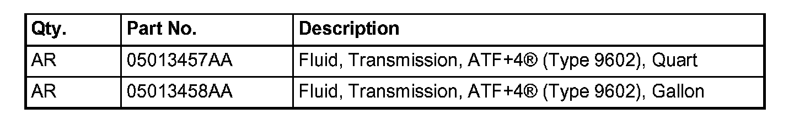

A/T - ATF+4 Fluid Usage/Applications
NUMBER: 21-010-06GROUP: Transmission
DATE: April 14, 2006
THIS BULLETIN SUPERSEDES TECHNICAL SERVICE BULLETIN 21-004-04, DATED MARCH 16, 2004, WHICH SHOULD BE REMOVED FROM YOUR FILES. THIS IS A COMPLETE REVISION AND NO ASTERISKS HAVE BEEN USED TO HIGHLIGHT REVISIONS.
SUBJECT:
Automatic Transmission Fluid Usage ATF+4 (Type M59602)
MODELS:
1989 - 1995 (AA) Spirit/Acclaim/Lebaron Sedan
1989 - 2003 (AB) Ram Van/Wagon
1989 - 1993 (AC) Dynasty/New Yorker/New Yorker Salon
1989 - 1993 (AD) Ram Truck
1989 - 1994 (AG) Daytona
1989 (AH) Lancer/Lebaron GTS
1989 - 1995 (AJ) Lebaron Coupe/Lebaron Convertible
1989 - 1990 (AK) Aries/Reliant
1989 - 1990 (AL) Horizon/Omni
1989 (AM) Diplomat/Gran Fury/New Yorker Fifth Avenue
1989 - 2004 (AN) Dakota
1989 - 1994 (AP) Shadow/Sundance
1990 - 1991 (AQ) Maserati
1990 - 1993 (AY) Imperial/New Yorker Fifth Avenue
1994 - 2003 (BR/BE) Ram Truck
2004 - 2007 (CS) Pacifica
1998 - 2003 (DN) Durango
2002 - 2007 (DR/DH/D1) Ram Truck
2007 (DC) Ram 3500 Cab Chassis
1995 - 2000 (FJ) Sebring/Avenger/Talon
1996 - 2000 (CS) Chrysler Voyager (International Market)
2004 - 2007 (HB) Durango
1995 - 2000 (JA) Cirrus/Stratus/Breeze
2007 (JK) Wrangler
2001 - 2006 (JR) Sebring Sedan & Convertible/Stratus Sedan
2007 (JS) Avenger/Sebring
1996 - 2000 (JX) Sebring Convertible
2002 - 2007 (KJ) Liberty
1993 - 2004 (LH) Concorde/Intrepid/Vision/LHS/New Yorker
/300M
2005 - 2007 (LX/LE) 300/Magnum/Charger
1996 - 2000 (NS) Town & Country/Caravan/Voyager
1995 - 2005 (PL) Neon
2002 - 2003 (PG) PT Cruiser (International Markets)
2001 - 2007 (PT) PT Cruiser
1997 - 2002 (PR) Prowler
2001 - 2007 (RG) Chrysler Voyager (International Markets)
2001 - 2007 (RS) Town & Country/Caravan/Voyager
1997 - 2006 (TJ) Wrangler
2001 - 2004 (WG) Grand Cherokee (International Markets)
Vehicles equipped with Gas engines
1999 - 2004 (WJ) Grand Cherokee
2005 - 2007 (WK/WH) Grand Cherokee
2006 - 2007 (XK/XH) Commander
1989 - 1995 (YJ) Wrangler
1996 - 1998 (ZG) Grand Cherokee (International Markets)
1994 - 1998 (ZJ) Grand Cherokee/Grand Wagoneer
NOTE:
This Service Bulletin DOES NOT apply to AW-4 transmissions, Sprinter transmissions, Crossfire transmissions, MK/PM vehicles equipped with Continuously Variable Transmission (CVT) and WG vehicles equipped with a diesel engine (sales code ENF) and a W5J400 or NAG1 transmission (sales code DGJ).
DISCUSSION:
ATF+4(R) - (Type 9602) is being used as factory fill for Chrysler Group automatic transmissions. ATF+4(R) is recommended for all vehicles equipped with Chrysler Group automatic transmissions EXCEPT FOR THOSE NOTED ABOVE.
NOTE:
ATF+4(R) must always be used in vehicles that were originally filled with ATF+4(R). DO NOT USE ANY OTHER FLUID.
NOTE:
ATF+4(R) is backward compatible with ATF+3, ATF+2, and ATF+. Additionally, ATF+4 can be used to top off vehicles that used ATF+3, ATF+2, or ATF+.
NOTE:
If ATF+4(R) is used to service models originally filled with ATF+3, ATF+2, and ATF+ the fluid maintenance schedules listed for that model does not change. The service interval currently in effect for a given model should continue to be followed. Refer to the Service or Owners manual for maintenance schedule directions.
In general terms, If ATF+, ATF+2 or ATF+3 was the recommended fluid, it is now recommended to use ATF+4.
BENEFITS
^ Better anti-wear properties
^ Improved rust/corrosion prevention
^ Controls oxidation
^ Eliminates deposits
^ Controls friction
^ Retains anti-foaming properties
^ Superior properties for low temperature operation
FLUID COLOR
Mopar ATF+4(R) has exceptional durability. However, the red dye used in ATF+4(R) is not permanent; as the fluid ages it may become darker or appear brown in color. ATF+4(R) also has a unique odor that may change with age. With ATF+4(R) fluid, color and odor are no longer indicators of fluid condition and do not necessarily support a fluid change.

PARTS REQUIRED:
POLICY:
Information Only
Disclaimer:
This bulletin is supplied as technical information only and is not an authorization for repair.